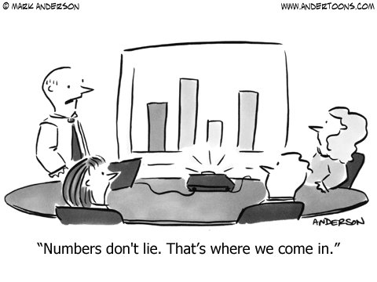

Syllabus
Click here to download a PDF copy of the syllabus.
Course info
| Modality | |
|---|---|
| Section 20 | Asynchronous |
Prerequisite: High School Algebra
Learning objectives
By the end of the quarter, you will be able to…
- Use statistical software to manage and process data.
- Use statistical software to perform exploratory data analyses. That is, explore data numerically and visually to gain understanding through data and generate hypotheses and inferences to later test.
- Recognize the importance of data collection, identify limitations in data collection methods, and determine how they affect the scope of inference.
- Build a conceptual understanding of the unified nature of statistical inference.
- Apply estimation and testing methods to analyze single variables or the relationship between two variables in order to understand natural phenomena and make data-based decisions.
- Model numerical response variables using a single or multiple explanatory variables.
- Interpret results in context without relying on statistical jargon.
- Critique and evaluate data-based claims and decisions.
Course Structure
This class will be run asynchronously. Each lesson will feature a short 10-20 minute lecture video, a reading with a corresponding reading check, followed by an activity. There will typically be around 4 lessons a week and a proficiency exam every 2 weeks. To be successful you need to be an independent learner and keep up on the assignments and due dates.
Textbooks
We will be using Introduction to Statistics and Data Science which is a free online book that we have been developing for this course.
Software
We will be using/introducing the free statistical software Posit Cloud.
Hardware
Students will need a laptop or Chromebook to be able to follow lectures and to work with Posit Cloud to complete activities. If access to a laptop is an issue, then please contact the course instructor and we will work to find an accommodation.
Assessment
Assessment for the course is comprised of five components: reading checks, activities, 3 exams, and a final project.
Reading Checks
Reading checks will be completed using “Tutorial Software” on Posit Cloud and uploaded to the course Canvas page. Each reading check will be scaled to be worth 10 points.
The lowest two grades will be dropped at the end of the quarter.
Activities and small assignments
Daily activities will be worth 10 points and primarily graded for completion. Breakdown of points: 10 points fully complete; 5 points partially complete; 0 not complete. Since the exercises are not graded for accuracy you need to make sure that you check your answers against the solutions. Small assignments are generally surveys.
The lowest two activity grades will be dropped at the end of the quarter.
Exams
There will be 3 open-note exams; they will be structured very similarly to your reading checks. Half of it will focus on conceptual knowledge and half will focus on practical applications. The exams are timed 50 minutes and are not cumulative.
Project
The final project can be completed individually or in groups of up to 4 people. More information will be provided later in the quarter.
Missed Exam Policy
There are no make-up exams. The exam must be completed and submitted during the exam window.
Grading
The final course grade will be calculated as follows:
| Category | Percentage |
|---|---|
| Reading Checks | 15% |
| Activities/Small Assignments | 15% |
| Exam 1 | 20% |
| Exam 2 | 20% |
| Exam 3 | 20% |
| Final Project | 10% |
The final letter grade will be rounded to nearest tenth of a percent and determined based on the following thresholds:
| Letter Grade | Final Course Grade |
|---|---|
| A | >= 93 |
| A- | 90 - 92.9 |
| B+ | 87 - 89.9 |
| B | 83 - 86.9 |
| B- | 80 - 82.9 |
| C+ | 77 - 79.9 |
| C | 73 - 76.9 |
| C- | 70 - 72.9 |
| D | 60 - 69.9 |
| F | < 59.9 |
There is NO curve to this course. The exams are open notes.
Tips for success
- Dedicate yourself to being an active and engaged learner.
- Prepare for class by reading and working through code before class.
- Work in groups to learn and complete activities.
- Ask questions! Ask them during class, office hours, or on Campuswire.
- Contribute to a welcoming and inclusive learning environment.
- Don’t be afraid to make mistakes, you learn from mistakes.
Asking Questions & Course Communication
This term we will be using Campuswire (“Enrollment Code: 2776”) as our preferred platform for questions about activities, reading checks, and general course questions. The system is highly catered to getting you help quickly and efficiently from classmates and the instructional team. Rather than emailing questions to the instructional team, you should post your questions on Campuswire.
The instructional team will check Campuswire periodically and answer questions, but we strongly encourage students to answer each other’s questions. To this end, student will be able to earn bonus points — see Canvas for details.
Please do not expect answers during weekends and evenings.
Accessibility & Accommodations
Northwestern University is committed to providing the most accessible learning environment as possible for students with disabilities. Should you anticipate or experience disability-related barriers in the academic setting, please contact AccessibleNU to move forward with the university’s established accommodation process1. If you already have established accommodations with AccessibleNU, please let me know as soon as possible, preferably within the first two weeks of the term, so we can work together to implement your disability accommodations. Disability information, including academic accommodations, is confidential under the Family Educational Rights and Privacy Act.
COVID-19 Policies
Classroom Expectations
with University expectations regarding appropriate classroom behavior, including those outlined below and in the COVID-19 Expectations for Students. With respect to classroom procedures, this includes:
- Policies regarding masking, social distancing and other public health measures evolve as the situation changes. Students are responsible for understanding and complying with current University, state and city requirements.
- In some classes, masking and/or social distancing may be required as a result of an Americans with Disabilities Act (ADA) accommodation for the instructor or a student in the class even when not generally required on campus. In such cases, the instructor will notify the class.
with the COVID-19 Expectations for Students or other University expectations related to COVID-19, the instructor may ask the student to leave the class. The instructor is asked to report the incident to the Office of Community Standards for additional follow-up.
Exceptions to Class Modality
will be asynchronous.
of the community remains our priority. If you are experiencing any symptoms of COVID and update your Symptom Tracker application right away to connect with Northwestern’s Case Management Team for guidance on next steps. Also contact the instructor as soon as possible to arrange to complete coursework. We plan to record sessions for students that miss to to COVID-19 related issues.
a personal emergency should contact the instructor as soon as possible to arrange to complete coursework.
recommendations prevent in person class from being held on a given day, the instructor or the university will notify students.
Prohibition of Recording of Class Sessions by Students
of classroom or other academic activities is prohibited.2 Unauthorized recording is unethical and may also be a violation of University policy and state law.
Students requesting the use of assistive technology as an accommodation should contact AccessibleNU. Unauthorized use of classroom recordings — including distributing or posting them — is also prohibited.
Under the University’s Copyright Policy, faculty own the copyright to instructional materials — including those resources created specifically for the purposes of instruction, such as syllabi, lectures and lecture notes, and presentations. Students cannot copy, reproduce, display, or distribute these materials. Students who engage in unauthorized recording, unauthorized use of a recording, or unauthorized distribution of instructional materials will be referred to the appropriate University office for follow-up.
This class or portions of this class will be recorded by the instructor for educational purposes. Your instructor will communicate how members of the class can access the recordings. Portions of the course that contain images, questions or commentary/discussion by students will be edited out of any recordings that are saved beyond the current term.
Academic Integrity
to comply with the policies found in the booklet, “Academic Integrity at Northwestern University: A Basic Guide”. All papers submitted for credit in this course must be submitted electronically unless otherwise instructed by the professor. Your written work may be tested for plagiarized content. For details regarding academic integrity at Northwestern or to download the guide, visit: https://www.northwestern.edu/provost/policies-procedures/academic-integrity/index.html
Diversity, Equity, and Inclusion
This course strives to be an inclusive learning community, respecting those of differing backgrounds and beliefs. As a community, we aim to be respectful to all students in this class, regardless of race, ethnicity, socio-economic status, religion, gender identity or sexual orientation.
Sexual Misconduct & Reporting
to fostering an environment where students are safe and free from sexual misconduct. Confidential resources are available to those who have experienced sexual misconduct.3
Faculty, instructors, and TAs are not confidential resources and are required to report incidents of sexual misconduct, whether discussed in your assignments or in person, to the Title IX Coordinator, who can provide information about resources and options.
We encourage students who have experienced sexual misconduct to talk with someone to get support. For more information visit the Get Help4.
Discrimination & Sexual Harassment
Northwestern University’s policies on Discrimination, Harassment, and Sexual Harassment apply to all members of the University community, including students, staff, and faculty. Any student, staff, or faculty member who believes that they have been discriminated against or harassed on the basis of his or her race, color, religion, national origin, sex, sexual orientation, gender identity, gender expression, parental status, marital status, age, disability, citizenship, veteran status, genetic information or any other classification protected by law, should contact the Office of Equal Opportunity and Access5 or the Sexual Harassment Prevention Office6.
Additional information about the University’s discrimination and harassment policies, including the campus resources available to assist individuals with discrimination or harassment concerns, is available online on the Human Resources Equal Opportunity and Access website7.
Northwestern strictly prohibits retaliation against any member of its community for reporting or inquiring about wrongful or unlawful activity. For more details see https://policies.northwestern.edu/docs/non-retaliation-policy-FINAL.pdf.
Wellness & Mental Health Resources
Northwestern University is committed to supporting the wellness of our students. Student Affairs has multiple resources to support student wellness and mental health. If you are feeling distressed or overwhelmed, please reach out for help. Students can access confidential resources through the Counseling and Psychological Services (CAPS), Religious and Spiritual Life (RSL) and the Center for Awareness, Response and Education (CARE). Additional information on all of the resources mentioned above can be found here:
Student Resources
with FGLI students – pronounced figly – who are first-generation, lower-income, and/or DACA/Undocumented. SES works with these students to foster identity development, navigate campus resources, and build community. Through campus-wide partnerships and advocacy, SES strives to build an inclusive Northwestern community that is welcoming, supportive, and accessible for all students. SES can connect you to a number of resources (emergency aid assistance, books, supplies, laptops, food accessibility and much more!) both within the SES office and across campus. For more information please visit https://www.northwestern.edu/enrichment.
Important dates
Click here for the full academic calendar.
Footnotes
email: accessiblenu@northwestern.edu; phoone: 847-467-5530↩︎
Including advising sessions or office hours.↩︎
See http://www.northwestern.edu/sexual-misconduct/get-help/confidential-support.html for details.↩︎
http://www.northwestern.edu/sexual-misconduct/get-help/index.html↩︎
847.491.7458↩︎
847.467.6571↩︎